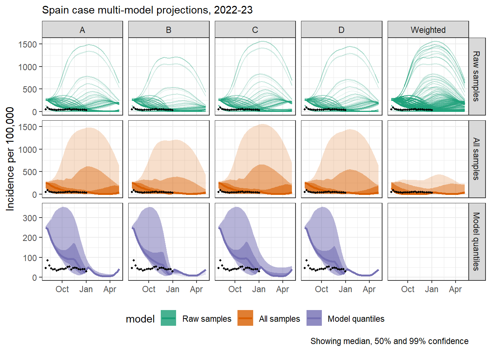
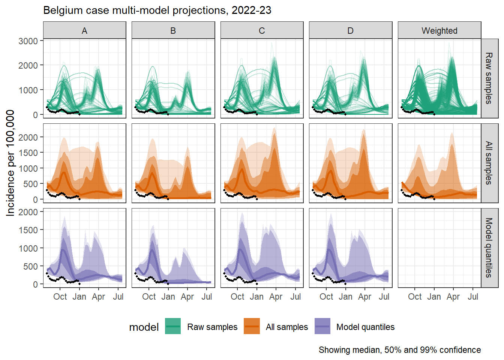
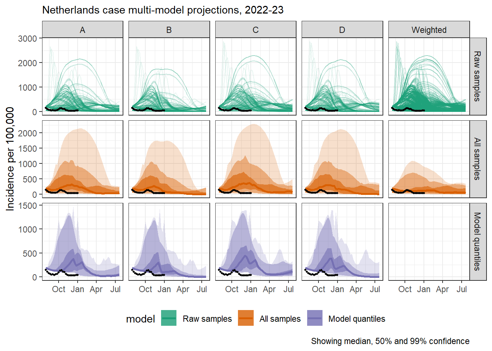
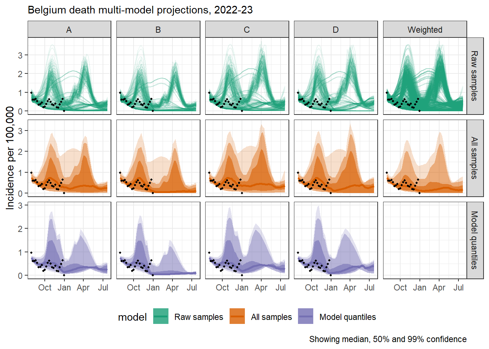
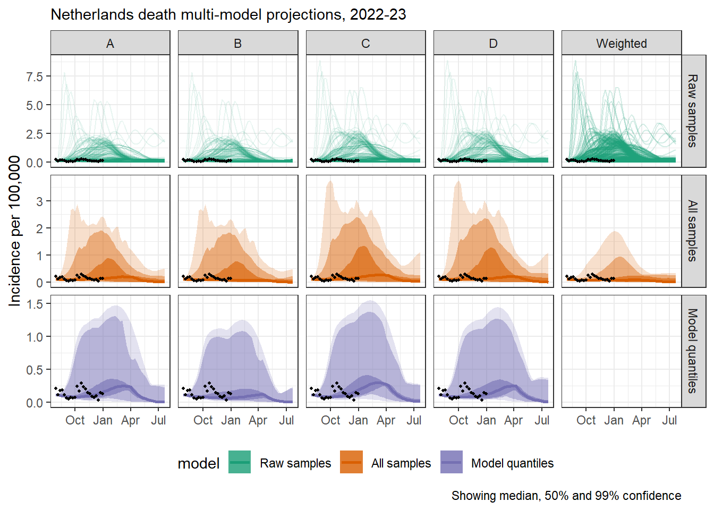

Uncertainty when combining scenarios from multiple models
Background
- Scenario modelling for infectious diseases
- Understanding dynamics
- Policy relevance: continuous incidence, but also quantitites like: peaks, cumulative burden
- Uncertainty in scenario modelling
- Epistemic and stochastic uncertainty
- Methods for modelling to approach each of these
- Collaborative modelling and ensembles
- Compare models to compare not only results but range of uncertainty
- Use of ensembles in other scenario heavy fields (CMIP)
- Scenarios to inform long term COVD-19 management in Europe
- Representation of uncertainty in collaborative modelling projects
- Hubs collect quantiles from each model because it’s resource efficient
- This necessarily creates some information loss
- We haven’t yet explored what information loss this creates or how this impacts the aim of the project
- Reason to think it might impact it with e.g. peaks as important features of epidemics
Aim
Compare results in terms of number of peaks (other policy relevant measures?) from different methods of combining scenario models, specifically:
- Raw samples
- All raw samples
- Ensemble of raw samples
- Unweighted median of all raw samples
- Ensemble of model quantiles
- All samples from each model summarised in quantiles
- Unweighted median of model quantiles
This demonstrates the information lost by asking modellers to submit quantiles of their model samples.
Methods
- Setting scenarios and collection of samples
- Scenarios co-created between ECDC and modellers
- Pilot and three rounds
- Ensemble of opportunity: open Hub
- Projections using any method, up to 1 year for any of 32 countries
- Difference between quantiles and raw samples
- Load samples from multiple models.
- Create ensemble A: unweighted median ensemble of models from all samples.
- Create quantiles from raw samples for each model.
- Create ensemble B: unweighted median ensemble from the collection of quantiles.
- Compare differences in (qualitative, policy-relevant) information shown by ensembles A and B.
- Number of peaks
- Timing of peaks
- Duration of waves
- Cumulative burden
- Repeat and compare across multiple scenarios and locations.
Results
- In round # we collected # models in total with over 3 models contributing results for # locations
[[1]]
[[2]]
[[3]]
[[4]]
[[5]]
Figure 1
Figure 2
- Ensembles from quantiles show reduced uncertainty compared to ensemble from samples
- Neither ensemble captures the height of peaks
- Deaths in Belgium have an interesting double peak in only the ensemble from samples
Discussion
Summary
Strengths and limitations
Further work
Conclusions and recommendations